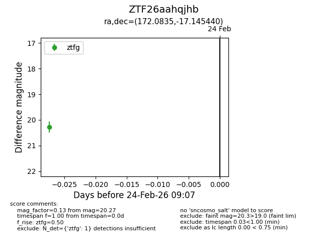
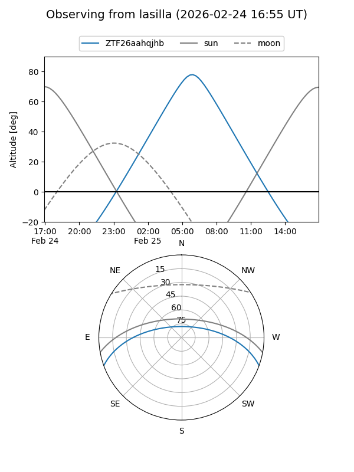
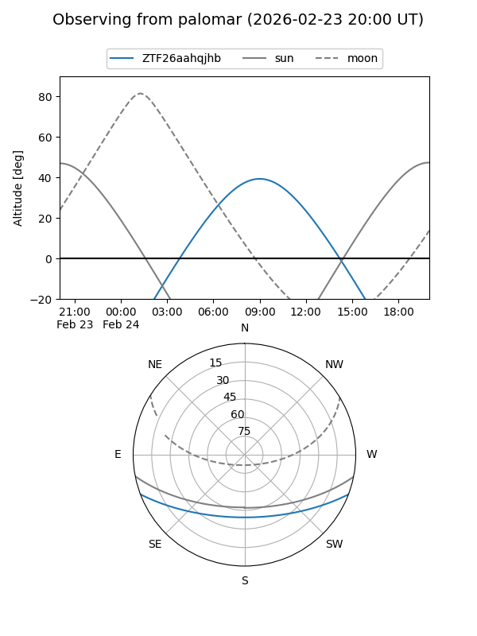

ZTF26aahqjhb
Target ZTF26aahqjhb at 2026-02-24 09:08
Aliases and brokers:
FINK: link
Lasair: link
ALeRCE: link
alt names
ZTF26aahqjhb (ztf,fink_ztf)
Coordinates:
equatorial (ra, dec) = 172.0835,-17.14544
equatorial (HMS+DMS) = 11:28:20.05,-17:08:43.58
galactic (l, b) = (276.0887,+41.35431)
Flags:
Photometry:
last ztfg=20.27
1 ztfg detections
Lightcurve

Visibility


Additional plots